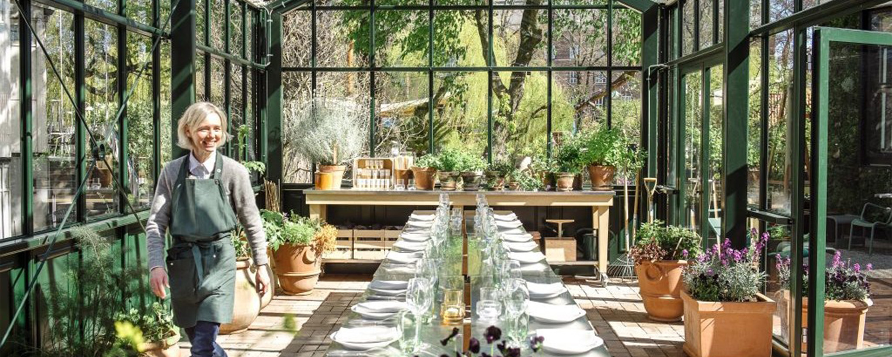
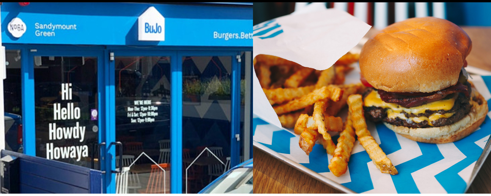
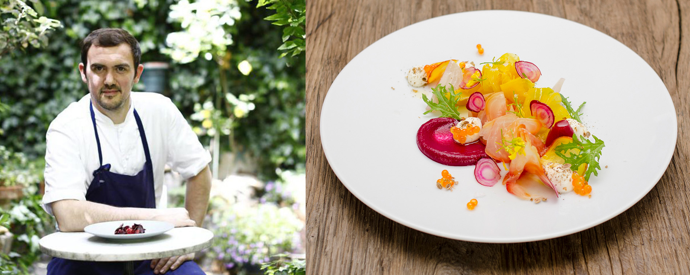
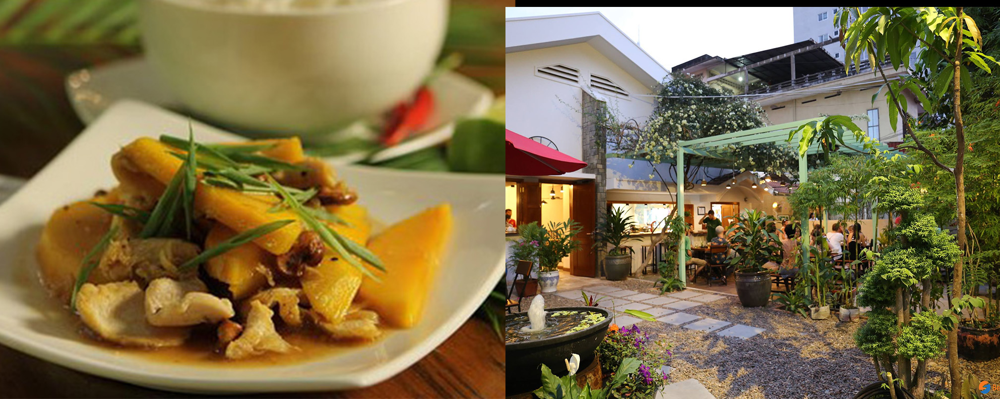
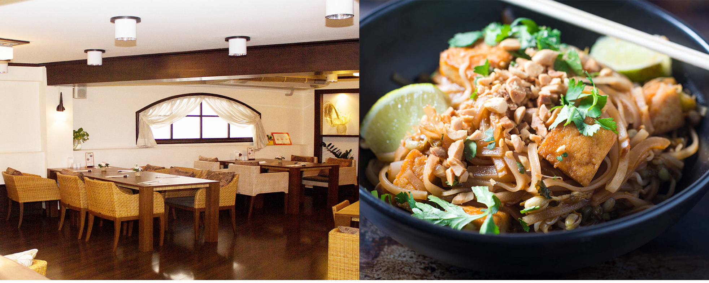

ECO-CONSCIOUS RESTAURANTS
As we become more aware of our actions on a global scale, we are making choices based on the impact of our action. More restaurants than ever before are trying to minimise their impact on the environment while offering a wider range of options for both vegetarians and vegans.
Here are some of the top options for those seeking a more environmentally-responsible culinary experience.
Let’s eat green!!!
By Weronika Kiljańczyk
Gemyse Tivoli
(Tivoli Gardens 1577 København V, Denmark)
Gemyse’s green kitchen gets its organic vegetables from a local company that specialises in organic produce, and supplements with herbs from its own kitchen garden. One of the things you’ll find on the menu is Today’s Special, which consists of six green courses served “family style” to share at the table. Both fermentation and preservation will take your taste buds on a joy ride with flavours that span from the subtle Nordic to exotic Middle Eastern and Asian. If you’re not ready to give up on animal protein, you can add a fish or meat serving.

BuJo - Burger Joint
(6A Sandymount Green, Dublin 4, D04 XY70, Ireland)
They are leading the way in terms of sustainability and using environmentally-friendly products. All of their packaging is 100% compostable, their electricity 100% renewable and even the staff uniforms are ethically sourced. It is the only eatery of its kind to achieve a 3-star rating from the Sustainable Restaurant Association and they also have vegan options on the menu including a Beyond Beef burger.

Bertrand Grébaut - Septime
(80 Rue de Charonne, 75011 Paris, France)
Paris-based Septime, led by chef-owner Bertrand Grébaut continually tops the charts of sustainable dining excellence.
The restaurant focuses on vegetable dishes, sourcing 99% of its products locally and investing in urban farmers and even a small farm near Paris’s city centre. It also saves seeds as part of a project called Conservatoire du Goût and works with a private recycling contractor who helps them measure and monitor waste.

Eleven One Kitchen
(St 334, Phnom Penh, Cambodia)
At first, the interior decoration will help you make you feel the fresh and green atmosphere filled with different-sized plant pots. Then, you’ll experience an eco-friendly meal , package with biodegradable boxes, and drinks with only bamboo straws instead of plastic ones. As the slogan quote saying “Eat Healthy, Stay Wealthy, Care for the environment”, Eleven One Kitchen not only care for customers’ health but also initiate a rare environmental business in Southeast Asia. All food in Eleven One Kitchen are grown locally and bought directly from the farmers.

Sustaina
(Khlong Tan Nuea, Watthana, Bangkok 10110, Thailand)
95 per cent of the options on the menu at restaurant Sustaina are vegan-friendly, with the most popular dish being the King of Tofu – a cold soup made with kinu-tofu, ginger and seaweed. The owners of this small restaurant say their aim is to protect the environment by embracing organic ingredients and shunning chemicals, and much of their produce is sourced from the Harmony Life Organic Farm.
